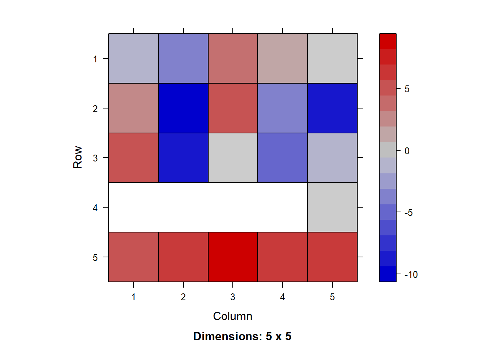
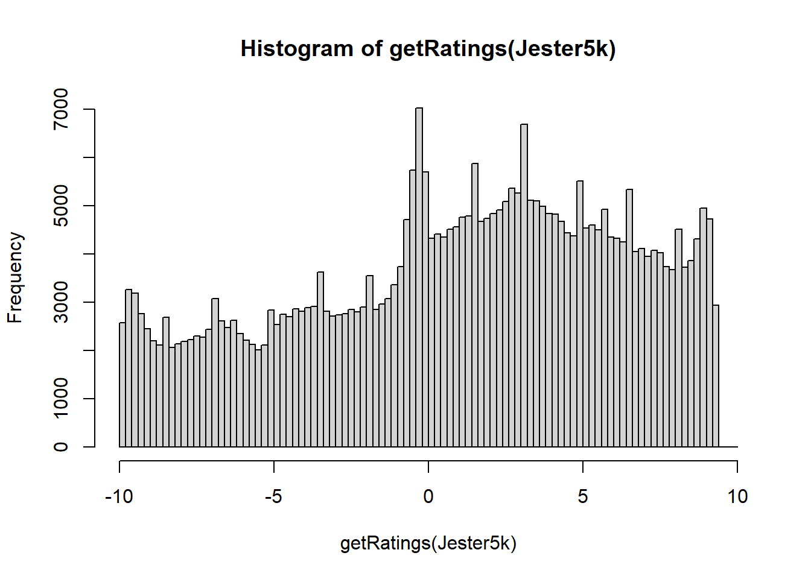

3 Exploratory data analysis
First, let's investigate the data a bit. Revise the R code in the lecture note and answer the following questions:
How many items (i.e. jokes) are there in this dataset?
On average, how many jokes do the users rate? You can report the median value in this case to get an integer value.
On average, how many ratings have been made to each joke?
You can get information about the dataset by using the cat() function. rowCounts and colCounts can be useful to get information about items and users.
`
## A man visits the doctor. The doctor says "I have bad news for you.You have cancer and Alzheimer's disease". The man replies "Well,thank God I don't have cancer!"## 5000 x 100 rating matrix of class 'realRatingMatrix' with 363209 ratings.## 5 x 5 sparse Matrix of class "dgCMatrix"
## j1 j2 j3 j4 j5
## u7452 -1.60 -3.54 4.17 1.84 -0.44
## u8016 2.04 -9.42 5.53 -3.83 -8.50
## u7162 5.53 -9.08 0.49 -4.71 -1.07
## u8086 . . . . -0.39
## u23653 4.47 6.80 8.20 6.89 6.55
## Min. 1st Qu. Median Mean 3rd Qu. Max.
## 36.00 53.00 72.00 72.64 100.00 100.00## Min. 1st Qu. Median Mean 3rd Qu. Max.
## 1732 2082 3971 3632 4957 5000hist(getRatings(Jester5k), breaks=100) #getRating(): extract a vector with all non-missing ratings from a rating matrix